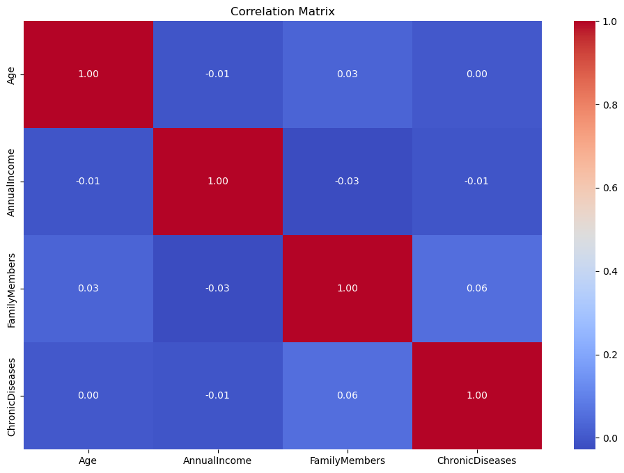
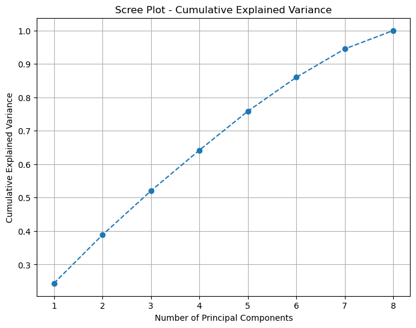
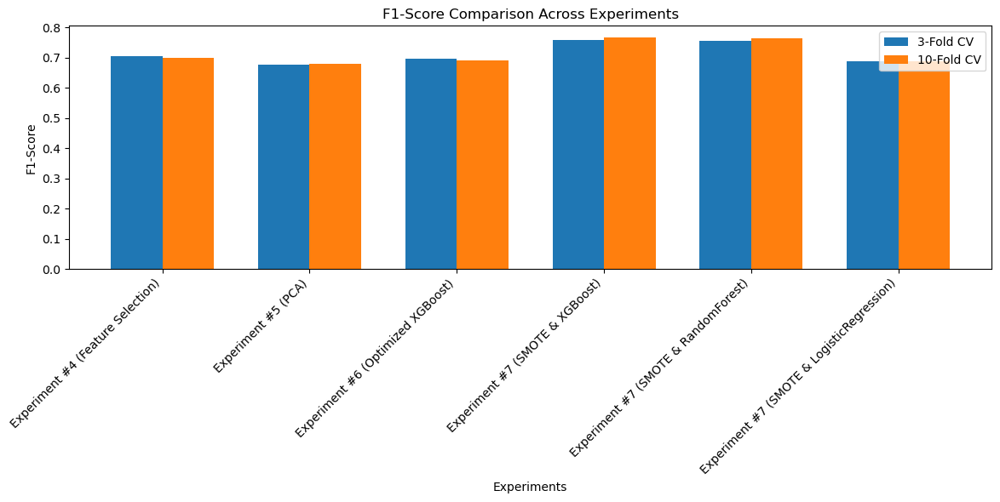

import sqlite3
import csv
# Define file paths
file_path = 'output_data.csv'
new_db_path = 'normalized_data.db'
# Create a new SQLite database connection
conn = sqlite3.connect(new_db_path)
cursor = conn.cursor()
# Create tables for normalization
cursor.execute("""
CREATE TABLE IF NOT EXISTS MainTable (
ID INTEGER PRIMARY KEY,
Age INTEGER,
AnnualIncome INTEGER,
FamilyMembers INTEGER,
ChronicDiseases INTEGER,
TravelInsurance INTEGER,
EmploymentTypeID INTEGER,
GraduateStatusID INTEGER,
FrequentFlyerID INTEGER,
TravelAbroadID INTEGER,
FOREIGN KEY (EmploymentTypeID) REFERENCES EmploymentType(ID),
FOREIGN KEY (GraduateStatusID) REFERENCES GraduateStatus(ID),
FOREIGN KEY (FrequentFlyerID) REFERENCES FrequentFlyer(ID),
FOREIGN KEY (TravelAbroadID) REFERENCES TravelAbroad(ID)
);
""")
cursor.execute("""
CREATE TABLE IF NOT EXISTS EmploymentType (
ID INTEGER PRIMARY KEY AUTOINCREMENT,
Type TEXT UNIQUE
);
""")
cursor.execute("""
CREATE TABLE IF NOT EXISTS GraduateStatus (
ID INTEGER PRIMARY KEY AUTOINCREMENT,
Status TEXT UNIQUE
);
""")
cursor.execute("""
CREATE TABLE IF NOT EXISTS FrequentFlyer (
ID INTEGER PRIMARY KEY AUTOINCREMENT,
Status TEXT UNIQUE
);
""")
cursor.execute("""
CREATE TABLE IF NOT EXISTS TravelAbroad (
ID INTEGER PRIMARY KEY AUTOINCREMENT,
Status TEXT UNIQUE
);
""")
# Commit schema creation
conn.commit()
# Read data from the CSV file
data = []
with open(file_path, mode='r') as file:
csv_reader = csv.DictReader(file)
for row in csv_reader:
data.append(row)
# Extract unique values for categorical columns
employment_types = set(row['Employment Type'] for row in data)
graduate_status = set(row['GraduateOrNot'] for row in data)
frequent_flyer_status = set(row['FrequentFlyer'] for row in data)
travel_abroad_status = set(row['EverTravelledAbroad'] for row in data)
# Populate categorical tables
for employment in employment_types:
cursor.execute("INSERT OR IGNORE INTO EmploymentType (Type) VALUES (?);", (employment,))
for status in graduate_status:
cursor.execute("INSERT OR IGNORE INTO GraduateStatus (Status) VALUES (?);", (status,))
for flyer_status in frequent_flyer_status:
cursor.execute("INSERT OR IGNORE INTO FrequentFlyer (Status) VALUES (?);", (flyer_status,))
for abroad_status in travel_abroad_status:
cursor.execute("INSERT OR IGNORE INTO TravelAbroad (Status) VALUES (?);", (abroad_status,))
# Commit inserts into categorical tables
conn.commit()
# Map categorical values to IDs
employment_type_map = {row[1]: row[0] for row in cursor.execute("SELECT ID, Type FROM EmploymentType;")}
graduate_status_map = {row[1]: row[0] for row in cursor.execute("SELECT ID, Status FROM GraduateStatus;")}
frequent_flyer_map = {row[1]: row[0] for row in cursor.execute("SELECT ID, Status FROM FrequentFlyer;")}
travel_abroad_map = {row[1]: row[0] for row in cursor.execute("SELECT ID, Status FROM TravelAbroad;")}
# Prepare and insert data into the main table
main_table_data = [
(
int(row['']), # ID
int(row['Age']),
int(row['AnnualIncome']),
int(row['FamilyMembers']),
int(row['ChronicDiseases']),
int(row['TravelInsurance']),
employment_type_map[row['Employment Type']],
graduate_status_map[row['GraduateOrNot']],
frequent_flyer_map[row['FrequentFlyer']],
travel_abroad_map[row['EverTravelledAbroad']]
)
for row in data
]
cursor.executemany("""
INSERT INTO MainTable (
ID, Age, AnnualIncome, FamilyMembers, ChronicDiseases, TravelInsurance,
EmploymentTypeID, GraduateStatusID, FrequentFlyerID, TravelAbroadID
) VALUES (?, ?, ?, ?, ?, ?, ?, ?, ?, ?);
""", main_table_data)
# Commit changes and close the connection
conn.commit()
conn.close()
---------------------------------------------------------------------------
IntegrityError Traceback (most recent call last)
Cell In[1], line 115
98 # Prepare and insert data into the main table
99 main_table_data = [
100 (
101 int(row['']), # ID
(...)
112 for row in data
113 ]
--> 115 cursor.executemany("""
116 INSERT INTO MainTable (
117 ID, Age, AnnualIncome, FamilyMembers, ChronicDiseases, TravelInsurance,
118 EmploymentTypeID, GraduateStatusID, FrequentFlyerID, TravelAbroadID
119 ) VALUES (?, ?, ?, ?, ?, ?, ?, ?, ?, ?);
120 """, main_table_data)
122 # Commit changes and close the connection
123 conn.commit()
IntegrityError: UNIQUE constraint failed: MainTable.ID
import sqlite3
# Define the database file path
db_path = 'normalized_data.db'
# Function to execute a query and print the results
def execute_query(query):
try:
# Connect to the database
conn = sqlite3.connect(db_path)
cursor = conn.cursor()
# Execute the query
cursor.execute(query)
# Fetch all results
results = cursor.fetchall()
# Get column names
column_names = [description[0] for description in cursor.description]
# Print the results
print(f"{' | '.join(column_names)}")
print("-" * 80)
for row in results:
print(" | ".join(map(str, row)))
# Close the connection
conn.close()
except Exception as e:
print(f"An error occurred: {e}")
# Sample queries
print("1. Fetch all records from the MainTable:")
query_main_table = "SELECT * FROM MainTable;"
table_info="pragma table_info(MainTable);"
execute_query(table_info)
#print("\n2. Fetch employment types:")
#query_employment_type = "SELECT * FROM EmploymentType;"
#execute_query(query_employment_type)
#print("\n3. Fetch graduate statuses:")
#query_graduate_status = "SELECT * FROM GraduateStatus;"
#execute_query(query_graduate_status)
# You can add more queries as needed
1. Fetch all records from the MainTable:
cid | name | type | notnull | dflt_value | pk
--------------------------------------------------------------------------------
0 | ID | INTEGER | 0 | None | 1
1 | Age | INTEGER | 0 | None | 0
2 | AnnualIncome | INTEGER | 0 | None | 0
3 | FamilyMembers | INTEGER | 0 | None | 0
4 | ChronicDiseases | INTEGER | 0 | None | 0
5 | TravelInsurance | INTEGER | 0 | None | 0
6 | EmploymentTypeID | INTEGER | 0 | None | 0
7 | GraduateStatusID | INTEGER | 0 | None | 0
8 | FrequentFlyerID | INTEGER | 0 | None | 0
9 | TravelAbroadID | INTEGER | 0 | None | 0
import sqlite3
import pandas as pd
# Connect to the normalized database
db_path = 'normalized_data.db' # Path to your database file
conn = sqlite3.connect(db_path)
# List all tables in the database to confirm the structure
query_tables = "SELECT name FROM sqlite_master WHERE type='table';"
tables = pd.read_sql_query(query_tables, conn)
print("Tables in the database:")
print(tables)
# Reconstruct data using SQL joins
query_reconstruct = """
SELECT
MainTable.ID,
MainTable.Age,
MainTable.AnnualIncome,
MainTable.FamilyMembers,
MainTable.ChronicDiseases,
MainTable.TravelInsurance,
EmploymentType.Type AS EmploymentType,
GraduateStatus.Status AS GraduateStatus,
FrequentFlyer.Status AS FrequentFlyerStatus,
TravelAbroad.Status AS TravelAbroadStatus
FROM MainTable
LEFT JOIN EmploymentType ON MainTable.EmploymentTypeID = EmploymentType.ID
LEFT JOIN GraduateStatus ON MainTable.GraduateStatusID = GraduateStatus.ID
LEFT JOIN FrequentFlyer ON MainTable.FrequentFlyerID = FrequentFlyer.ID
LEFT JOIN TravelAbroad ON MainTable.TravelAbroadID = TravelAbroad.ID;
"""
# Load the reconstructed data into a Pandas DataFrame
df = pd.read_sql_query(query_reconstruct, conn)
# Close the connection
conn.close()
# Display the first few rows of the data
print("Reconstructed Data:")
print(df.head())
Tables in the database:
name
0 MainTable
1 EmploymentType
2 sqlite_sequence
3 GraduateStatus
4 FrequentFlyer
5 TravelAbroad
Reconstructed Data:
ID Age AnnualIncome FamilyMembers ChronicDiseases TravelInsurance \
0 0 31 400000 6 1 0
1 1 31 1250000 7 0 0
2 2 34 500000 4 1 1
3 3 28 700000 3 1 0
4 4 28 700000 8 1 0
EmploymentType GraduateStatus FrequentFlyerStatus \
0 Government Sector Yes No
1 Private Sector/Self Employed Yes No
2 Private Sector/Self Employed Yes No
3 Private Sector/Self Employed Yes No
4 Private Sector/Self Employed Yes Yes
TravelAbroadStatus
0 No
1 No
2 No
3 No
4 No
import mlflow
# Step 1: Set the tracking URI
mlflow.set_tracking_uri("https://dagshub.com/mahiswarreddydesireddy18/my-first-repo.mlflow")
# Step 2: Set your DagsHub access token in the headers
import os
os.environ["MLFLOW_TRACKING_USERNAME"] = "mahiswarreddydesireddy18"
os.environ["MLFLOW_TRACKING_PASSWORD"] = "502864c8473782218c50bbdd48801403d265ada8"
# Step 3: Create or set the experiment
experiment_name = "Model Optimization and Comparison"
# Check if the experiment exists, otherwise create it
experiment = mlflow.get_experiment_by_name(experiment_name)
if experiment is None:
mlflow.create_experiment(experiment_name)
mlflow.set_experiment(experiment_name)
# Step 4: Log a test experiment to verify connectivity
with mlflow.start_run(run_name="Test_Run"):
mlflow.log_param("param1", 5)
mlflow.log_metric("metric1", 0.89)
mlflow.set_tag("tag1", "test_tag")
print(f"MLflow tracking URI: {mlflow.get_tracking_uri()}")
print(f"Experiment '{experiment_name}' is ready for logging.")
🏃 View run Test_Run at: https://dagshub.com/mahiswarreddydesireddy18/my-first-repo.mlflow/#/experiments/0/runs/8c5ccd6234d1434da7e1fa76a68acff0
🧪 View experiment at: https://dagshub.com/mahiswarreddydesireddy18/my-first-repo.mlflow/#/experiments/0
MLflow tracking URI: https://dagshub.com/mahiswarreddydesireddy18/my-first-repo.mlflow
Experiment 'Model Optimization and Comparison' is ready for logging.
import pandas as pd
import matplotlib.pyplot as plt
import seaborn as sns
import mlflow
# Start an MLflow run
with mlflow.start_run(run_name="Data Cleaning and Preprocessing"):
# Copy the data for cleaning and preprocessing
cleaned_df = df.copy()
# Step 1: Inspect Missing Values
missing_values = cleaned_df.isnull().sum()
print("Missing Values:")
print(missing_values)
mlflow.log_param("Missing_Values", missing_values.to_dict())
# Step 2: Handle Missing Values
# (Here, I’ll drop rows with missing values for simplicity. Adjust if needed.)
cleaned_df = cleaned_df.dropna()
# Log a snapshot of the cleaned data as an artifact
cleaned_df.to_csv("cleaned_data.csv", index=False)
mlflow.log_artifact("cleaned_data.csv")
# Step 3: Check for Outliers (Boxplot)
numeric_columns = ['Age', 'AnnualIncome', 'FamilyMembers', 'ChronicDiseases', 'TravelInsurance']
plt.figure(figsize=(15, 8))
cleaned_df[numeric_columns].boxplot()
plt.title("Outliers Detection Using Boxplot")
plt.savefig("boxplot_outliers.png")
mlflow.log_artifact("boxplot_outliers.png")
plt.show()
# Step 4: Rename Columns
renamed_columns = {
'EmploymentType': 'Employment_Type',
'GraduateStatus': 'Graduate_Status',
'FrequentFlyerStatus': 'Frequent_Flyer_Status',
'TravelAbroadStatus': 'Travel_Abroad_Status'
}
cleaned_df.rename(columns=renamed_columns, inplace=True)
mlflow.log_param("Renamed_Columns", renamed_columns)
# Step 5: Verify Data Types
print("Data Types Before Correction:")
print(cleaned_df.dtypes)
cleaned_df.dtypes.to_csv("data_types.csv")
mlflow.log_artifact("data_types.csv")
# Step 6: Summarize Data
print("Descriptive Statistics:")
print(cleaned_df.describe())
cleaned_df.describe().to_csv("descriptive_statistics.csv")
mlflow.log_artifact("descriptive_statistics.csv")
# Step 7: Exploratory Data Analysis (EDA)
# Visualize the distribution of Age
plt.figure(figsize=(8, 5))
sns.histplot(cleaned_df['Age'], kde=True, bins=15, color='skyblue')
plt.title("Age Distribution")
plt.xlabel("Age")
plt.ylabel("Frequency")
plt.savefig("age_distribution.png")
mlflow.log_artifact("age_distribution.png")
plt.show()
# Pair Plot for Numerical Columns
sns.pairplot(cleaned_df[numeric_columns])
plt.suptitle("Pairwise Relationships Among Numerical Columns", y=1.02)
plt.savefig("pairwise_relationships.png")
mlflow.log_artifact("pairwise_relationships.png")
plt.show()
print("EDA and preprocessing steps logged to DagsHub!")
Missing Values:
ID 0
Age 0
AnnualIncome 0
FamilyMembers 0
ChronicDiseases 0
TravelInsurance 0
EmploymentType 0
GraduateStatus 0
FrequentFlyerStatus 0
TravelAbroadStatus 0
dtype: int64
Data Types Before Correction:
ID int64
Age int64
AnnualIncome int64
FamilyMembers int64
ChronicDiseases int64
TravelInsurance int64
Employment_Type object
Graduate_Status object
Frequent_Flyer_Status object
Travel_Abroad_Status object
dtype: object
Descriptive Statistics:
ID Age AnnualIncome FamilyMembers ChronicDiseases \
count 1987.000000 1987.000000 1.987000e+03 1987.000000 1987.000000
mean 993.000000 29.650226 9.327630e+05 4.752894 0.277806
std 573.741812 2.913308 3.768557e+05 1.609650 0.448030
min 0.000000 25.000000 3.000000e+05 2.000000 0.000000
25% 496.500000 28.000000 6.000000e+05 4.000000 0.000000
50% 993.000000 29.000000 9.000000e+05 5.000000 0.000000
75% 1489.500000 32.000000 1.250000e+06 6.000000 1.000000
max 1986.000000 35.000000 1.800000e+06 9.000000 1.000000
TravelInsurance
count 1987.000000
mean 0.357323
std 0.479332
min 0.000000
25% 0.000000
50% 0.000000
75% 1.000000
max 1.000000
🏃 View run Data Cleaning and Preprocessing at: https://dagshub.com/mahiswarreddydesireddy18/my-first-repo.mlflow/#/experiments/0/runs/0b141ed5ac724bb88fd96125ea7b3f3f
🧪 View experiment at: https://dagshub.com/mahiswarreddydesireddy18/my-first-repo.mlflow/#/experiments/0
EDA and preprocessing steps logged to DagsHub!
from sklearn.model_selection import train_test_split
import matplotlib.pyplot as plt
import seaborn as sns
import mlflow
# Start an MLflow run
with mlflow.start_run(run_name="Train-Test Split"):
# Check class distribution for the target variable
target_col = 'TravelInsurance'
class_distribution = cleaned_df[target_col].value_counts(normalize=True)
print("Class Distribution (TravelInsurance):")
print(class_distribution)
mlflow.log_param("Class_Distribution", class_distribution.to_dict())
# Visualize class distribution
plt.figure(figsize=(6, 4))
sns.barplot(x=class_distribution.index, y=class_distribution.values, palette='viridis')
plt.title("Class Distribution of Travel Insurance")
plt.xlabel("TravelInsurance (0 = No, 1 = Yes)")
plt.ylabel("Proportion")
plt.savefig("class_distribution.png")
mlflow.log_artifact("class_distribution.png")
plt.show()
# Determine if stratification is necessary based on class distribution
stratify = True if abs(class_distribution[0] - class_distribution[1]) > 0.05 else False
mlflow.log_param("Stratification_Applied", stratify)
# Perform train/test split with stratification if needed
X = cleaned_df.drop(columns=[target_col, 'ID'])
y = cleaned_df[target_col]
train_data, test_data, train_labels, test_labels = train_test_split(
X, y, test_size=0.3, random_state=42, stratify=y if stratify else None
)
# Log the shapes of the training and testing datasets
mlflow.log_param("Train_Data_Shape", train_data.shape)
mlflow.log_param("Test_Data_Shape", test_data.shape)
print(f"Train Data Shape: {train_data.shape}")
print(f"Test Data Shape: {test_data.shape}")
print(f"Stratification Applied: {stratify}")
Class Distribution (TravelInsurance):
0 0.642677
1 0.357323
Name: TravelInsurance, dtype: float64
Train Data Shape: (1390, 8)
Test Data Shape: (597, 8)
Stratification Applied: True
🏃 View run Train-Test Split at: https://dagshub.com/mahiswarreddydesireddy18/my-first-repo.mlflow/#/experiments/0/runs/ead5b322f9644953b971b9c2f08e8170
🧪 View experiment at: https://dagshub.com/mahiswarreddydesireddy18/my-first-repo.mlflow/#/experiments/0
# Correlation Matrix for Numerical Features
import mlflow
with mlflow.start_run(run_name="Correlation Analysis"):
# Compute the correlation matrix
correlation_matrix = train_data.corr()
# Save the correlation matrix as a CSV for logging
correlation_matrix.to_csv("correlation_matrix.csv")
mlflow.log_artifact("correlation_matrix.csv")
# Visualize the correlation matrix as a heatmap
plt.figure(figsize=(12, 8))
sns.heatmap(correlation_matrix, annot=True, fmt=".2f", cmap="coolwarm")
plt.title("Correlation Matrix")
plt.savefig("correlation_matrix_heatmap.png")
mlflow.log_artifact("correlation_matrix_heatmap.png")
plt.show()
# Log observations for highly correlated features
print("Highly Correlated Features (Threshold = 0.7):")
high_corr_features = {}
for col in correlation_matrix.columns:
high_corr = correlation_matrix[col][correlation_matrix[col] > 0.7].index.tolist()
if len(high_corr) > 1:
high_corr_features[col] = high_corr
print(f"{col} highly correlates with: {high_corr}")
mlflow.log_param("Highly_Correlated_Features", high_corr_features)

Highly Correlated Features (Threshold = 0.7):
🏃 View run Correlation Analysis at: https://dagshub.com/mahiswarreddydesireddy18/my-first-repo.mlflow/#/experiments/0/runs/1e2f951f381c4d4fb19db946399b00c1
🧪 View experiment at: https://dagshub.com/mahiswarreddydesireddy18/my-first-repo.mlflow/#/experiments/0
from sklearn.compose import ColumnTransformer
from sklearn.pipeline import Pipeline
from sklearn.preprocessing import StandardScaler, OneHotEncoder
from sklearn.linear_model import LogisticRegression
from sklearn.model_selection import cross_validate
import pandas as pd
import mlflow
with mlflow.start_run(run_name="Logistic Regression with Cross-Validation"):
# Define numerical and categorical columns
numerical_features = ['Age', 'AnnualIncome', 'FamilyMembers', 'ChronicDiseases']
categorical_features = ['Employment_Type', 'Graduate_Status', 'Frequent_Flyer_Status', 'Travel_Abroad_Status']
# Create the preprocessing pipeline
preprocessor = ColumnTransformer(
transformers=[
('num', StandardScaler(), numerical_features),
('cat', OneHotEncoder(), categorical_features)
]
)
# Create the full pipeline with Logistic Regression
pipeline = Pipeline([
('preprocessor', preprocessor),
('classifier', LogisticRegression(max_iter=1000, random_state=42))
])
# Log pipeline details
mlflow.log_param("Classifier", "LogisticRegression")
mlflow.log_param("Max_Iter", 1000)
# Perform cross-validation (3-fold and 10-fold)
print("Performing 3-fold CV...")
cv_results_3 = cross_validate(
pipeline, train_data, train_labels, cv=3, scoring=['f1', 'accuracy'], return_train_score=True
)
print("Performing 10-fold CV...")
cv_results_10 = cross_validate(
pipeline, train_data, train_labels, cv=10, scoring=['f1', 'accuracy'], return_train_score=True
)
# Log cross-validation results
mlflow.log_metric("F1_Mean_3Fold", cv_results_3['test_f1'].mean())
mlflow.log_metric("F1_Std_3Fold", cv_results_3['test_f1'].std())
mlflow.log_metric("Accuracy_Mean_3Fold", cv_results_3['test_accuracy'].mean())
mlflow.log_metric("Accuracy_Std_3Fold", cv_results_3['test_accuracy'].std())
mlflow.log_metric("F1_Mean_10Fold", cv_results_10['test_f1'].mean())
mlflow.log_metric("F1_Std_10Fold", cv_results_10['test_f1'].std())
mlflow.log_metric("Accuracy_Mean_10Fold", cv_results_10['test_accuracy'].mean())
mlflow.log_metric("Accuracy_Std_10Fold", cv_results_10['test_accuracy'].std())
# Save CV results as CSV artifacts
pd.DataFrame(cv_results_3).to_csv("cv_results_3fold.csv", index=False)
pd.DataFrame(cv_results_10).to_csv("cv_results_10fold.csv", index=False)
mlflow.log_artifact("cv_results_3fold.csv")
mlflow.log_artifact("cv_results_10fold.csv")
# Train on the full training data
pipeline.fit(train_data, train_labels)
train_score = pipeline.score(train_data, train_labels)
# Log training accuracy
mlflow.log_metric("Train_Accuracy", train_score)
# Store the results locally
experiment_1_results = {
"f1_mean_3fold": cv_results_3['test_f1'].mean(),
"f1_std_3fold": cv_results_3['test_f1'].std(),
"accuracy_mean_3fold": cv_results_3['test_accuracy'].mean(),
"accuracy_std_3fold": cv_results_3['test_accuracy'].std(),
"f1_mean_10fold": cv_results_10['test_f1'].mean(),
"f1_std_10fold": cv_results_10['test_f1'].std(),
"accuracy_mean_10fold": cv_results_10['test_accuracy'].mean(),
"accuracy_std_10fold": cv_results_10['test_accuracy'].std(),
"train_accuracy": train_score
}
# Display results
print("3-Fold CV Results:")
print(f"F1-Score (Mean ± Std): {cv_results_3['test_f1'].mean():.4f} ± {cv_results_3['test_f1'].std():.4f}")
print(f"Accuracy (Mean ± Std): {cv_results_3['test_accuracy'].mean():.4f} ± {cv_results_3['test_accuracy'].std():.4f}")
print("\n10-Fold CV Results:")
print(f"F1-Score (Mean ± Std): {cv_results_10['test_f1'].mean():.4f} ± {cv_results_10['test_f1'].std():.4f}")
print(f"Accuracy (Mean ± Std): {cv_results_10['test_accuracy'].mean():.4f} ± {cv_results_10['test_accuracy'].std():.4f}")
print(f"\nTraining Accuracy: {train_score:.4f}")
Performing 3-fold CV...
Performing 10-fold CV...
3-Fold CV Results:
F1-Score (Mean ± Std): 0.5966 ± 0.0242
Accuracy (Mean ± Std): 0.7655 ± 0.0086
10-Fold CV Results:
F1-Score (Mean ± Std): 0.6054 ± 0.0506
Accuracy (Mean ± Std): 0.7719 ± 0.0247
Training Accuracy: 0.7727
🏃 View run Logistic Regression with Cross-Validation at: https://dagshub.com/mahiswarreddydesireddy18/my-first-repo.mlflow/#/experiments/0/runs/f69a296f2ad64fa88c7771f226aefae5
🧪 View experiment at: https://dagshub.com/mahiswarreddydesireddy18/my-first-repo.mlflow/#/experiments/0
from sklearn.ensemble import RandomForestClassifier
from sklearn.linear_model import RidgeClassifier
from xgboost import XGBClassifier
import pandas as pd
import mlflow
# Define classifiers to test
classifiers = {
"LogisticRegression": LogisticRegression(max_iter=1000, random_state=42),
"RidgeClassifier": RidgeClassifier(random_state=42),
"RandomForestClassifier": RandomForestClassifier(random_state=42, n_estimators=100),
"XGBClassifier": XGBClassifier(eval_metric='logloss', random_state=42) # Corrected
}
# Dictionary to store results
experiment_2_results = {}
# Start an MLflow run
with mlflow.start_run(run_name="Model Comparison"):
# Loop through classifiers
for name, classifier in classifiers.items():
print(f"\nRunning {name}...")
# Log classifier name
mlflow.set_tag("Classifier", name)
# Create the pipeline
pipeline = Pipeline([
('preprocessor', preprocessor),
('classifier', classifier)
])
# Perform 3-fold cross-validation
cv_results_3 = cross_validate(
pipeline, train_data, train_labels, cv=3, scoring=['f1', 'accuracy'], return_train_score=True
)
# Perform 10-fold cross-validation
cv_results_10 = cross_validate(
pipeline, train_data, train_labels, cv=10, scoring=['f1', 'accuracy'], return_train_score=True
)
# Train on full training data
pipeline.fit(train_data, train_labels)
train_score = pipeline.score(train_data, train_labels)
# Store the results
experiment_2_results[name] = {
"f1_mean_3fold": cv_results_3['test_f1'].mean(),
"f1_std_3fold": cv_results_3['test_f1'].std(),
"accuracy_mean_3fold": cv_results_3['test_accuracy'].mean(),
"accuracy_std_3fold": cv_results_3['test_accuracy'].std(),
"f1_mean_10fold": cv_results_10['test_f1'].mean(),
"f1_std_10fold": cv_results_10['test_f1'].std(),
"accuracy_mean_10fold": cv_results_10['test_accuracy'].mean(),
"accuracy_std_10fold": cv_results_10['test_accuracy'].std(),
"train_accuracy": train_score
}
# Log metrics to MLflow
mlflow.log_metric(f"{name}_F1_Mean_3Fold", cv_results_3['test_f1'].mean())
mlflow.log_metric(f"{name}_F1_Std_3Fold", cv_results_3['test_f1'].std())
mlflow.log_metric(f"{name}_Accuracy_Mean_3Fold", cv_results_3['test_accuracy'].mean())
mlflow.log_metric(f"{name}_Accuracy_Std_3Fold", cv_results_3['test_accuracy'].std())
mlflow.log_metric(f"{name}_F1_Mean_10Fold", cv_results_10['test_f1'].mean())
mlflow.log_metric(f"{name}_F1_Std_10Fold", cv_results_10['test_f1'].std())
mlflow.log_metric(f"{name}_Accuracy_Mean_10Fold", cv_results_10['test_accuracy'].mean())
mlflow.log_metric(f"{name}_Accuracy_Std_10Fold", cv_results_10['test_accuracy'].std())
mlflow.log_metric(f"{name}_Train_Accuracy", train_score)
# Save CV results as CSV files and log as artifacts
pd.DataFrame(cv_results_3).to_csv(f"{name}_cv_results_3fold.csv", index=False)
pd.DataFrame(cv_results_10).to_csv(f"{name}_cv_results_10fold.csv", index=False)
mlflow.log_artifact(f"{name}_cv_results_3fold.csv")
mlflow.log_artifact(f"{name}_cv_results_10fold.csv")
# Print results for the current classifier
print(f"{name} Results:")
print(f"3-Fold CV F1-Score (Mean ± Std): {cv_results_3['test_f1'].mean():.4f} ± {cv_results_3['test_f1'].std():.4f}")
print(f"10-Fold CV F1-Score (Mean ± Std): {cv_results_10['test_f1'].mean():.4f} ± {cv_results_10['test_f1'].std():.4f}")
print(f"Training Accuracy: {train_score:.4f}")
Running LogisticRegression...
LogisticRegression Results:
3-Fold CV F1-Score (Mean ± Std): 0.5966 ± 0.0242
10-Fold CV F1-Score (Mean ± Std): 0.6054 ± 0.0506
Training Accuracy: 0.7727
Running RidgeClassifier...
RidgeClassifier Results:
3-Fold CV F1-Score (Mean ± Std): 0.5769 ± 0.0449
10-Fold CV F1-Score (Mean ± Std): 0.5848 ± 0.0470
Training Accuracy: 0.7669
Running RandomForestClassifier...
RandomForestClassifier Results:
3-Fold CV F1-Score (Mean ± Std): 0.6869 ± 0.0194
10-Fold CV F1-Score (Mean ± Std): 0.6996 ± 0.0256
Training Accuracy: 0.9281
Running XGBClassifier...
XGBClassifier Results:
3-Fold CV F1-Score (Mean ± Std): 0.7040 ± 0.0335
10-Fold CV F1-Score (Mean ± Std): 0.6988 ± 0.0311
Training Accuracy: 0.9000
🏃 View run Model Comparison at: https://dagshub.com/mahiswarreddydesireddy18/my-first-repo.mlflow/#/experiments/0/runs/e438b7d517214d9ebb20b7ebb6b1dd45
🧪 View experiment at: https://dagshub.com/mahiswarreddydesireddy18/my-first-repo.mlflow/#/experiments/0
import numpy as np
import mlflow
import pandas as pd
# Start an MLflow run
with mlflow.start_run(run_name="Feature Engineering and Evaluation"):
# Create a copy of the training data
train_data_fe = train_data.copy()
# Step 1: Feature Engineering
# Example 1: Interaction term between Age and AnnualIncome
train_data_fe['Age_Income_Interaction'] = train_data['Age'] * train_data['AnnualIncome']
# Example 2: Ratio of FamilyMembers to Age
train_data_fe['Family_Age_Ratio'] = train_data['FamilyMembers'] / train_data['Age']
# Example 3: Log transformation of AnnualIncome to reduce skewness
train_data_fe['Log_AnnualIncome'] = np.log1p(train_data['AnnualIncome'])
# Add similar features to test data for consistency
test_data_fe = test_data.copy()
test_data_fe['Age_Income_Interaction'] = test_data['Age'] * test_data['AnnualIncome']
test_data_fe['Family_Age_Ratio'] = test_data['FamilyMembers'] / test_data['Age']
test_data_fe['Log_AnnualIncome'] = np.log1p(test_data['AnnualIncome'])
# Log engineered features
engineered_features = ['Age_Income_Interaction', 'Family_Age_Ratio', 'Log_AnnualIncome']
mlflow.log_param("Engineered_Features", engineered_features)
# Save datasets with engineered features
train_data_fe.to_csv("train_data_fe.csv", index=False)
test_data_fe.to_csv("test_data_fe.csv", index=False)
mlflow.log_artifact("train_data_fe.csv")
mlflow.log_artifact("test_data_fe.csv")
# Step 2: Evaluate the Impact of Engineered Features
# Use the best-performing model from Experiment #2 (XGBoost)
pipeline_fe = Pipeline([
('preprocessor', preprocessor),
('classifier', XGBClassifier(eval_metric='logloss', random_state=42))
])
# Perform 3-fold cross-validation
print("Performing 3-fold CV with Feature Engineering...")
cv_results_3_fe = cross_validate(
pipeline_fe, train_data_fe, train_labels, cv=3, scoring=['f1', 'accuracy'], return_train_score=True
)
# Perform 10-fold cross-validation
print("Performing 10-fold CV with Feature Engineering...")
cv_results_10_fe = cross_validate(
pipeline_fe, train_data_fe, train_labels, cv=10, scoring=['f1', 'accuracy'], return_train_score=True
)
# Train on the full training data
pipeline_fe.fit(train_data_fe, train_labels)
train_score_fe = pipeline_fe.score(train_data_fe, train_labels)
# Log results
mlflow.log_metric("F1_Mean_3Fold_FE", cv_results_3_fe['test_f1'].mean())
mlflow.log_metric("F1_Std_3Fold_FE", cv_results_3_fe['test_f1'].std())
mlflow.log_metric("Accuracy_Mean_3Fold_FE", cv_results_3_fe['test_accuracy'].mean())
mlflow.log_metric("Accuracy_Std_3Fold_FE", cv_results_3_fe['test_accuracy'].std())
mlflow.log_metric("F1_Mean_10Fold_FE", cv_results_10_fe['test_f1'].mean())
mlflow.log_metric("F1_Std_10Fold_FE", cv_results_10_fe['test_f1'].std())
mlflow.log_metric("Accuracy_Mean_10Fold_FE", cv_results_10_fe['test_accuracy'].mean())
mlflow.log_metric("Accuracy_Std_10Fold_FE", cv_results_10_fe['test_accuracy'].std())
mlflow.log_metric("Train_Accuracy_FE", train_score_fe)
# Display results
print("3-Fold CV Results with Feature Engineering:")
print(f"F1-Score (Mean ± Std): {cv_results_3_fe['test_f1'].mean():.4f} ± {cv_results_3_fe['test_f1'].std():.4f}")
print(f"Accuracy (Mean ± Std): {cv_results_3_fe['test_accuracy'].mean():.4f} ± {cv_results_3_fe['test_accuracy'].std():.4f}")
print("\n10-Fold CV Results with Feature Engineering:")
print(f"F1-Score (Mean ± Std): {cv_results_10_fe['test_f1'].mean():.4f} ± {cv_results_10_fe['test_f1'].std():.4f}")
print(f"Accuracy (Mean ± Std): {cv_results_10_fe['test_accuracy'].mean():.4f} ± {cv_results_10_fe['test_accuracy'].std():.4f}")
print(f"\nTraining Accuracy with Feature Engineering: {train_score_fe:.4f}")
Performing 3-fold CV with Feature Engineering...
Performing 10-fold CV with Feature Engineering...
3-Fold CV Results with Feature Engineering:
F1-Score (Mean ± Std): 0.7040 ± 0.0335
Accuracy (Mean ± Std): 0.8072 ± 0.0130
10-Fold CV Results with Feature Engineering:
F1-Score (Mean ± Std): 0.6988 ± 0.0311
Accuracy (Mean ± Std): 0.8079 ± 0.0144
Training Accuracy with Feature Engineering: 0.9000
🏃 View run Feature Engineering and Evaluation at: https://dagshub.com/mahiswarreddydesireddy18/my-first-repo.mlflow/#/experiments/0/runs/bcacfb39ab0d43978e05122f69e9be21
🧪 View experiment at: https://dagshub.com/mahiswarreddydesireddy18/my-first-repo.mlflow/#/experiments/0
import numpy as np
import pandas as pd
from sklearn.feature_selection import VarianceThreshold
from sklearn.ensemble import RandomForestClassifier
from sklearn.pipeline import Pipeline
from xgboost import XGBClassifier
from sklearn.model_selection import cross_validate
import mlflow
# Function to Remove Highly Correlated Features
def remove_high_correlation(data, threshold=0.8):
"""Remove features with a high correlation above the given threshold."""
corr_matrix = data.select_dtypes(include=['float64', 'int64']).corr().abs() # Use only numerical data for correlation
upper_triangle = corr_matrix.where(np.triu(np.ones(corr_matrix.shape), k=1).astype(bool))
high_corr_features = [
column for column in upper_triangle.columns if any(upper_triangle[column] > threshold)
]
return data.drop(columns=high_corr_features), high_corr_features
# Start an MLflow run
with mlflow.start_run(run_name="Feature Selection and Evaluation"):
# Step 1: Correlation Threshold
train_data_corr, removed_corr_features = remove_high_correlation(train_data_fe, threshold=0.8)
print(f"Removed Features due to High Correlation: {removed_corr_features}")
mlflow.log_param("Removed_High_Correlation_Features", removed_corr_features)
# Step 2: Preprocessing for Feature Importance
train_data_encoded = pd.get_dummies(train_data_corr, drop_first=True)
test_data_encoded = pd.get_dummies(test_data_fe, drop_first=True)
# Align train and test sets
test_data_encoded = test_data_encoded.reindex(columns=train_data_encoded.columns, fill_value=0)
# Step 3: Feature Importance
rf_model = RandomForestClassifier(random_state=42)
rf_model.fit(train_data_encoded, train_labels)
feature_importances = pd.DataFrame({
'Feature': train_data_encoded.columns,
'Importance': rf_model.feature_importances_
}).sort_values(by='Importance', ascending=False)
print("Top Features Based on Importance:")
print(feature_importances.head(10))
# Log feature importance as an artifact
feature_importances.to_csv("feature_importances.csv", index=False)
mlflow.log_artifact("feature_importances.csv")
# Log top 10 features
top_features = feature_importances['Feature'].head(10).tolist()
mlflow.log_param("Top_Features", top_features)
# Step 4: Variance Threshold
var_thresh = VarianceThreshold(threshold=0.01)
train_data_var = var_thresh.fit_transform(train_data_encoded[top_features])
test_data_var = var_thresh.transform(test_data_encoded[top_features])
retained_features = [top_features[i] for i in var_thresh.get_support(indices=True)]
print(f"Retained Features After Variance Threshold: {retained_features}")
mlflow.log_param("Retained_Features_After_Variance_Threshold", retained_features)
# Step 5: Evaluate the Impact of Feature Selection
pipeline_fs = Pipeline([
('classifier', XGBClassifier(eval_metric='logloss', random_state=42))
])
# Perform 3-fold cross-validation
print("Performing 3-fold CV with Feature Selection...")
cv_results_3_fs = cross_validate(
pipeline_fs, train_data_var, train_labels, cv=3, scoring=['f1', 'accuracy'], return_train_score=True
)
# Perform 10-fold cross-validation
print("Performing 10-fold CV with Feature Selection...")
cv_results_10_fs = cross_validate(
pipeline_fs, train_data_var, train_labels, cv=10, scoring=['f1', 'accuracy'], return_train_score=True
)
# Train on the full training data
pipeline_fs.fit(train_data_var, train_labels)
train_score_fs = pipeline_fs.score(train_data_var, train_labels)
# Log results
mlflow.log_metric("F1_Mean_3Fold_FS", cv_results_3_fs['test_f1'].mean())
mlflow.log_metric("F1_Std_3Fold_FS", cv_results_3_fs['test_f1'].std())
mlflow.log_metric("Accuracy_Mean_3Fold_FS", cv_results_3_fs['test_accuracy'].mean())
mlflow.log_metric("Accuracy_Std_3Fold_FS", cv_results_3_fs['test_accuracy'].std())
mlflow.log_metric("F1_Mean_10Fold_FS", cv_results_10_fs['test_f1'].mean())
mlflow.log_metric("F1_Std_10Fold_FS", cv_results_10_fs['test_f1'].std())
mlflow.log_metric("Accuracy_Mean_10Fold_FS", cv_results_10_fs['test_accuracy'].mean())
mlflow.log_metric("Accuracy_Std_10Fold_FS", cv_results_10_fs['test_accuracy'].std())
mlflow.log_metric("Train_Accuracy_FS", train_score_fs)
# Display results
print("3-Fold CV Results with Feature Selection:")
print(f"F1-Score (Mean ± Std): {cv_results_3_fs['test_f1'].mean():.4f} ± {cv_results_3_fs['test_f1'].std():.4f}")
print(f"Accuracy (Mean ± Std): {cv_results_3_fs['test_accuracy'].mean():.4f} ± {cv_results_3_fs['test_accuracy'].std():.4f}")
print("\n10-Fold CV Results with Feature Selection:")
print(f"F1-Score (Mean ± Std): {cv_results_10_fs['test_f1'].mean():.4f} ± {cv_results_10_fs['test_f1'].std():.4f}")
print(f"Accuracy (Mean ± Std): {cv_results_10_fs['test_accuracy'].mean():.4f} ± {cv_results_10_fs['test_accuracy'].std():.4f}")
print(f"\nTraining Accuracy with Feature Selection: {train_score_fs:.4f}")
Removed Features due to High Correlation: ['Age_Income_Interaction', 'Family_Age_Ratio', 'Log_AnnualIncome']
Top Features Based on Importance:
Feature Importance
1 AnnualIncome 0.430019
2 FamilyMembers 0.184234
0 Age 0.181640
7 Travel_Abroad_Status_Yes 0.093781
3 ChronicDiseases 0.036929
6 Frequent_Flyer_Status_Yes 0.034706
4 Employment_Type_Private Sector/Self Employed 0.022942
5 Graduate_Status_Yes 0.015748
Retained Features After Variance Threshold: ['AnnualIncome', 'FamilyMembers', 'Age', 'Travel_Abroad_Status_Yes', 'ChronicDiseases', 'Frequent_Flyer_Status_Yes', 'Employment_Type_Private Sector/Self Employed', 'Graduate_Status_Yes']
Performing 3-fold CV with Feature Selection...
Performing 10-fold CV with Feature Selection...
3-Fold CV Results with Feature Selection:
F1-Score (Mean ± Std): 0.7040 ± 0.0335
Accuracy (Mean ± Std): 0.8072 ± 0.0130
10-Fold CV Results with Feature Selection:
F1-Score (Mean ± Std): 0.7003 ± 0.0321
Accuracy (Mean ± Std): 0.8086 ± 0.0158
Training Accuracy with Feature Selection: 0.9000
🏃 View run Feature Selection and Evaluation at: https://dagshub.com/mahiswarreddydesireddy18/my-first-repo.mlflow/#/experiments/0/runs/5c25c66dcffb4ece8fcc042d0c413453
🧪 View experiment at: https://dagshub.com/mahiswarreddydesireddy18/my-first-repo.mlflow/#/experiments/0
from sklearn.decomposition import PCA
from sklearn.preprocessing import StandardScaler
from sklearn.pipeline import Pipeline
from xgboost import XGBClassifier
from sklearn.model_selection import cross_validate
import matplotlib.pyplot as plt
import numpy as np
import mlflow
# Start an MLflow run
with mlflow.start_run(run_name="PCA and Model Evaluation"):
# Step 1: Standardize Numerical Features
scaler = StandardScaler()
train_data_scaled = scaler.fit_transform(train_data_var)
test_data_scaled = scaler.transform(test_data_var)
# Step 2: Apply PCA
pca = PCA()
train_data_pca = pca.fit_transform(train_data_scaled)
# Step 3: Scree Plot
explained_variance = pca.explained_variance_ratio_
cumulative_variance = explained_variance.cumsum()
plt.figure(figsize=(8, 6))
plt.plot(range(1, len(explained_variance) + 1), cumulative_variance, marker='o', linestyle='--')
plt.title('Scree Plot - Cumulative Explained Variance')
plt.xlabel('Number of Principal Components')
plt.ylabel('Cumulative Explained Variance')
plt.grid()
plt.savefig("scree_plot.png")
plt.show()
mlflow.log_artifact("scree_plot.png")
# Select the number of components to retain 95% variance
num_components = (cumulative_variance >= 0.95).argmax() + 1
print(f"Number of Components to Retain 95% Variance: {num_components}")
mlflow.log_param("Num_Components_95_Variance", num_components)
# Step 4: Reduce Data to Selected Components
pca = PCA(n_components=num_components)
train_data_reduced = pca.fit_transform(train_data_scaled)
test_data_reduced = pca.transform(test_data_scaled)
# Step 5: Evaluate Model with Reduced Features
pipeline_pca = Pipeline([
('classifier', XGBClassifier(eval_metric='logloss', random_state=42))
])
# Perform 3-fold cross-validation
print("Performing 3-fold CV with PCA...")
cv_results_3_pca = cross_validate(
pipeline_pca, train_data_reduced, train_labels, cv=3, scoring=['f1', 'accuracy'], return_train_score=True
)
# Perform 10-fold cross-validation
print("Performing 10-fold CV with PCA...")
cv_results_10_pca = cross_validate(
pipeline_pca, train_data_reduced, train_labels, cv=10, scoring=['f1', 'accuracy'], return_train_score=True
)
# Train on the full training data
pipeline_pca.fit(train_data_reduced, train_labels)
train_score_pca = pipeline_pca.score(train_data_reduced, train_labels)
# Log cross-validation and training results
mlflow.log_metric("F1_Mean_3Fold_PCA", cv_results_3_pca['test_f1'].mean())
mlflow.log_metric("F1_Std_3Fold_PCA", cv_results_3_pca['test_f1'].std())
mlflow.log_metric("Accuracy_Mean_3Fold_PCA", cv_results_3_pca['test_accuracy'].mean())
mlflow.log_metric("Accuracy_Std_3Fold_PCA", cv_results_3_pca['test_accuracy'].std())
mlflow.log_metric("F1_Mean_10Fold_PCA", cv_results_10_pca['test_f1'].mean())
mlflow.log_metric("F1_Std_10Fold_PCA", cv_results_10_pca['test_f1'].std())
mlflow.log_metric("Accuracy_Mean_10Fold_PCA", cv_results_10_pca['test_accuracy'].mean())
mlflow.log_metric("Accuracy_Std_10Fold_PCA", cv_results_10_pca['test_accuracy'].std())
mlflow.log_metric("Train_Accuracy_PCA", train_score_pca)
# Store results
experiment_5_results = {
"f1_mean_3fold": cv_results_3_pca['test_f1'].mean(),
"f1_std_3fold": cv_results_3_pca['test_f1'].std(),
"accuracy_mean_3fold": cv_results_3_pca['test_accuracy'].mean(),
"accuracy_std_3fold": cv_results_3_pca['test_accuracy'].std(),
"f1_mean_10fold": cv_results_10_pca['test_f1'].mean(),
"f1_std_10fold": cv_results_10_pca['test_f1'].std(),
"accuracy_mean_10fold": cv_results_10_pca['test_accuracy'].mean(),
"accuracy_std_10fold": cv_results_10_pca['test_accuracy'].std(),
"train_accuracy": train_score_pca
}
# Display results
print("3-Fold CV Results with PCA:")
print(f"F1-Score (Mean ± Std): {cv_results_3_pca['test_f1'].mean():.4f} ± {cv_results_3_pca['test_f1'].std():.4f}")
print(f"Accuracy (Mean ± Std): {cv_results_3_pca['test_accuracy'].mean():.4f} ± {cv_results_3_pca['test_accuracy'].std():.4f}")
print("\n10-Fold CV Results with PCA:")
print(f"F1-Score (Mean ± Std): {cv_results_10_pca['test_f1'].mean():.4f} ± {cv_results_10_pca['test_f1'].std():.4f}")
print(f"Accuracy (Mean ± Std): {cv_results_10_pca['test_accuracy'].mean():.4f} ± {cv_results_10_pca['test_accuracy'].std():.4f}")
print(f"\nTraining Accuracy with PCA: {train_score_pca:.4f}")

Number of Components to Retain 95% Variance: 8
Performing 3-fold CV with PCA...
Performing 10-fold CV with PCA...
3-Fold CV Results with PCA:
F1-Score (Mean ± Std): 0.6782 ± 0.0305
Accuracy (Mean ± Std): 0.7820 ± 0.0150
10-Fold CV Results with PCA:
F1-Score (Mean ± Std): 0.6809 ± 0.0277
Accuracy (Mean ± Std): 0.7899 ± 0.0170
Training Accuracy with PCA: 0.9281
🏃 View run PCA and Model Evaluation at: https://dagshub.com/mahiswarreddydesireddy18/my-first-repo.mlflow/#/experiments/0/runs/ee0d86d930124370862c47398f3eae79
🧪 View experiment at: https://dagshub.com/mahiswarreddydesireddy18/my-first-repo.mlflow/#/experiments/0
from sklearn.model_selection import RandomizedSearchCV, cross_validate
from sklearn.preprocessing import StandardScaler
from sklearn.decomposition import PCA
from scipy.stats import uniform, randint
from xgboost import XGBClassifier
import mlflow
# Start an MLflow run
with mlflow.start_run(run_name="XGBoost Hyperparameter Tuning"):
# Step 1: Combine Feature Selection and PCA
# Use the retained features from Experiment #4
selected_features = retained_features # From Experiment #4
scaler = StandardScaler()
train_data_combined = scaler.fit_transform(train_data_encoded[selected_features])
test_data_combined = scaler.transform(test_data_encoded[selected_features])
# Apply PCA on the selected features
pca_combined = PCA(n_components=8) # Retain 95% variance as per Experiment #5
train_data_combined_pca = pca_combined.fit_transform(train_data_combined)
test_data_combined_pca = pca_combined.transform(test_data_combined)
mlflow.log_param("Selected_Features", selected_features)
mlflow.log_param("PCA_Components", 8)
# Step 2: Define XGBoost Hyperparameter Space
param_distributions = {
'n_estimators': randint(50, 200),
'learning_rate': uniform(0.01, 0.2),
'max_depth': randint(3, 10),
'subsample': uniform(0.6, 0.4),
'colsample_bytree': uniform(0.6, 0.4)
}
# Initialize XGBoost model without use_label_encoder
xgb_model = XGBClassifier(eval_metric='logloss', random_state=42)
# Step 3: Hyperparameter Tuning with RandomizedSearchCV
random_search = RandomizedSearchCV(
estimator=xgb_model,
param_distributions=param_distributions,
n_iter=50, # Number of configurations to try
scoring='f1',
cv=3, # 3-fold CV
random_state=42,
n_jobs=-1
)
print("Tuning hyperparameters with RandomizedSearchCV...")
random_search.fit(train_data_combined_pca, train_labels)
# Best hyperparameters
best_params = random_search.best_params_
print("Best Hyperparameters:", best_params)
mlflow.log_param("Best_Hyperparameters", best_params)
# Step 4: Evaluate the Optimized Model
best_xgb = random_search.best_estimator_
# Perform 3-fold cross-validation
print("Performing 3-fold CV with Optimized XGBoost...")
cv_results_3_custom = cross_validate(
best_xgb, train_data_combined_pca, train_labels, cv=3, scoring=['f1', 'accuracy'], return_train_score=True
)
# Perform 10-fold cross-validation
print("Performing 10-fold CV with Optimized XGBoost...")
cv_results_10_custom = cross_validate(
best_xgb, train_data_combined_pca, train_labels, cv=10, scoring=['f1', 'accuracy'], return_train_score=True
)
# Train on the full training data
best_xgb.fit(train_data_combined_pca, train_labels)
train_score_custom = best_xgb.score(train_data_combined_pca, train_labels)
# Log cross-validation and training results
mlflow.log_metric("F1_Mean_3Fold_Optimized", cv_results_3_custom['test_f1'].mean())
mlflow.log_metric("F1_Std_3Fold_Optimized", cv_results_3_custom['test_f1'].std())
mlflow.log_metric("Accuracy_Mean_3Fold_Optimized", cv_results_3_custom['test_accuracy'].mean())
mlflow.log_metric("Accuracy_Std_3Fold_Optimized", cv_results_3_custom['test_accuracy'].std())
mlflow.log_metric("F1_Mean_10Fold_Optimized", cv_results_10_custom['test_f1'].mean())
mlflow.log_metric("F1_Std_10Fold_Optimized", cv_results_10_custom['test_f1'].std())
mlflow.log_metric("Accuracy_Mean_10Fold_Optimized", cv_results_10_custom['test_accuracy'].mean())
mlflow.log_metric("Accuracy_Std_10Fold_Optimized", cv_results_10_custom['test_accuracy'].std())
mlflow.log_metric("Train_Accuracy_Optimized", train_score_custom)
# Store results
experiment_6_results = {
"f1_mean_3fold": cv_results_3_custom['test_f1'].mean(),
"f1_std_3fold": cv_results_3_custom['test_f1'].std(),
"accuracy_mean_3fold": cv_results_3_custom['test_accuracy'].mean(),
"accuracy_std_3fold": cv_results_3_custom['test_accuracy'].std(),
"f1_mean_10fold": cv_results_10_custom['test_f1'].mean(),
"f1_std_10fold": cv_results_10_custom['test_f1'].std(),
"accuracy_mean_10fold": cv_results_10_custom['test_accuracy'].mean(),
"accuracy_std_10fold": cv_results_10_custom['test_accuracy'].std(),
"train_accuracy": train_score_custom,
"best_params": best_params
}
# Display results
print("3-Fold CV Results with Optimized XGBoost:")
print(f"F1-Score (Mean ± Std): {cv_results_3_custom['test_f1'].mean():.4f} ± {cv_results_3_custom['test_f1'].std():.4f}")
print(f"Accuracy (Mean ± Std): {cv_results_3_custom['test_accuracy'].mean():.4f} ± {cv_results_3_custom['test_accuracy'].std():.4f}")
print("\n10-Fold CV Results with Optimized XGBoost:")
print(f"F1-Score (Mean ± Std): {cv_results_10_custom['test_f1'].mean():.4f} ± {cv_results_10_custom['test_f1'].std():.4f}")
print(f"Accuracy (Mean ± Std): {cv_results_10_custom['test_accuracy'].mean():.4f} ± {cv_results_10_custom['test_accuracy'].std():.4f}")
print(f"\nTraining Accuracy with Optimized XGBoost: {train_score_custom:.4f}")
Tuning hyperparameters with RandomizedSearchCV...
Best Hyperparameters: {'colsample_bytree': 0.8090931317527976, 'learning_rate': 0.09550820367170992, 'max_depth': 4, 'n_estimators': 173, 'subsample': 0.6431565707973218}
Performing 3-fold CV with Optimized XGBoost...
Performing 10-fold CV with Optimized XGBoost...
3-Fold CV Results with Optimized XGBoost:
F1-Score (Mean ± Std): 0.6969 ± 0.0279
Accuracy (Mean ± Std): 0.8058 ± 0.0096
10-Fold CV Results with Optimized XGBoost:
F1-Score (Mean ± Std): 0.6921 ± 0.0348
Accuracy (Mean ± Std): 0.8058 ± 0.0137
Training Accuracy with Optimized XGBoost: 0.8957
🏃 View run XGBoost Hyperparameter Tuning at: https://dagshub.com/mahiswarreddydesireddy18/my-first-repo.mlflow/#/experiments/0/runs/5920275ec0cc44348fce4b4ed5287cb5
🧪 View experiment at: https://dagshub.com/mahiswarreddydesireddy18/my-first-repo.mlflow/#/experiments/0
from imblearn.over_sampling import SMOTE
from sklearn.ensemble import RandomForestClassifier
from sklearn.linear_model import LogisticRegression
from sklearn.model_selection import cross_validate
import mlflow
import pandas as pd
# Start an MLflow run
with mlflow.start_run(run_name="SMOTE and Model Comparison"):
# Step 1: Apply SMOTE to Balance the Dataset
smote = SMOTE(random_state=42)
train_data_balanced, train_labels_balanced = smote.fit_resample(train_data_combined_pca, train_labels)
original_class_distribution = pd.Series(train_labels).value_counts().to_dict()
balanced_class_distribution = pd.Series(train_labels_balanced).value_counts().to_dict()
print(f"Original Class Distribution: {original_class_distribution}")
print(f"Balanced Class Distribution: {balanced_class_distribution}")
# Log class distributions
mlflow.log_param("Original_Class_Distribution", original_class_distribution)
mlflow.log_param("Balanced_Class_Distribution", balanced_class_distribution)
# Step 2: Define Models for Comparison
models = {
'XGBoost': XGBClassifier(eval_metric='logloss', random_state=42, **best_params),
'RandomForest': RandomForestClassifier(random_state=42, n_estimators=100, max_depth=10),
'LogisticRegression': LogisticRegression(random_state=42, max_iter=500)
}
# Step 3: Evaluate Each Model
experiment_7_results = {}
for model_name, model in models.items():
print(f"Evaluating {model_name}...")
# Perform 3-fold cross-validation
cv_results_3 = cross_validate(
model, train_data_balanced, train_labels_balanced, cv=3, scoring=['f1', 'accuracy'], return_train_score=True
)
# Perform 10-fold cross-validation
cv_results_10 = cross_validate(
model, train_data_balanced, train_labels_balanced, cv=10, scoring=['f1', 'accuracy'], return_train_score=True
)
# Train the model on the full training data
model.fit(train_data_balanced, train_labels_balanced)
train_accuracy = model.score(train_data_balanced, train_labels_balanced)
# Store results
experiment_7_results[model_name] = {
"f1_mean_3fold": cv_results_3['test_f1'].mean(),
"f1_std_3fold": cv_results_3['test_f1'].std(),
"accuracy_mean_3fold": cv_results_3['test_accuracy'].mean(),
"accuracy_std_3fold": cv_results_3['test_accuracy'].std(),
"f1_mean_10fold": cv_results_10['test_f1'].mean(),
"f1_std_10fold": cv_results_10['test_f1'].std(),
"accuracy_mean_10fold": cv_results_10['test_accuracy'].mean(),
"accuracy_std_10fold": cv_results_10['test_accuracy'].std(),
"train_accuracy": train_accuracy
}
# Log metrics for each model
mlflow.log_metric(f"{model_name}_F1_Mean_3Fold", cv_results_3['test_f1'].mean())
mlflow.log_metric(f"{model_name}_F1_Std_3Fold", cv_results_3['test_f1'].std())
mlflow.log_metric(f"{model_name}_Accuracy_Mean_3Fold", cv_results_3['test_accuracy'].mean())
mlflow.log_metric(f"{model_name}_Accuracy_Std_3Fold", cv_results_3['test_accuracy'].std())
mlflow.log_metric(f"{model_name}_F1_Mean_10Fold", cv_results_10['test_f1'].mean())
mlflow.log_metric(f"{model_name}_F1_Std_10Fold", cv_results_10['test_f1'].std())
mlflow.log_metric(f"{model_name}_Accuracy_Mean_10Fold", cv_results_10['test_accuracy'].mean())
mlflow.log_metric(f"{model_name}_Accuracy_Std_10Fold", cv_results_10['test_accuracy'].std())
mlflow.log_metric(f"{model_name}_Train_Accuracy", train_accuracy)
# Step 4: Display Results
for model_name, results in experiment_7_results.items():
print(f"\nResults for {model_name}:")
print(f"3-Fold CV F1-Score: {results['f1_mean_3fold']:.4f} ± {results['f1_std_3fold']:.4f}")
print(f"3-Fold CV Accuracy: {results['accuracy_mean_3fold']:.4f} ± {results['accuracy_std_3fold']:.4f}")
print(f"10-Fold CV F1-Score: {results['f1_mean_10fold']:.4f} ± {results['f1_std_10fold']:.4f}")
print(f"10-Fold CV Accuracy: {results['accuracy_mean_10fold']:.4f} ± {results['accuracy_std_10fold']:.4f}")
print(f"Training Accuracy: {results['train_accuracy']:.4f}")
Original Class Distribution: {0: 893, 1: 497}
Balanced Class Distribution: {0: 893, 1: 893}
Evaluating XGBoost...
Evaluating RandomForest...
Evaluating LogisticRegression...
Results for XGBoost:
3-Fold CV F1-Score: 0.7577 ± 0.0167
3-Fold CV Accuracy: 0.7716 ± 0.0130
10-Fold CV F1-Score: 0.7672 ± 0.0349
10-Fold CV Accuracy: 0.7834 ± 0.0272
Training Accuracy: 0.9003
Results for RandomForest:
3-Fold CV F1-Score: 0.7566 ± 0.0102
3-Fold CV Accuracy: 0.7844 ± 0.0098
10-Fold CV F1-Score: 0.7655 ± 0.0236
10-Fold CV Accuracy: 0.7923 ± 0.0151
Training Accuracy: 0.8830
Results for LogisticRegression:
3-Fold CV F1-Score: 0.6895 ± 0.0105
3-Fold CV Accuracy: 0.7172 ± 0.0063
10-Fold CV F1-Score: 0.6879 ± 0.0384
10-Fold CV Accuracy: 0.7161 ± 0.0308
Training Accuracy: 0.7223
🏃 View run SMOTE and Model Comparison at: https://dagshub.com/mahiswarreddydesireddy18/my-first-repo.mlflow/#/experiments/0/runs/89b54541c1c14499899771ebb78928b7
🧪 View experiment at: https://dagshub.com/mahiswarreddydesireddy18/my-first-repo.mlflow/#/experiments/0
import matplotlib.pyplot as plt
import numpy as np
import mlflow
import re
def sanitize_name(name):
# Replace special characters with underscores and limit length
sanitized = re.sub(r'[^A-Za-z0-9_]', '_', name)
return sanitized[:50] # Limit the name to 50 characters
# Start an MLflow run
with mlflow.start_run(run_name="F1-Score Comparison"):
# Collect F1-score results from the experiments
experiment_results = {
'Experiment #4 (Feature Selection)': {
'3-Fold': 0.7040,
'10-Fold': 0.7003
},
'Experiment #5 (PCA)': {
'3-Fold': 0.6782,
'10-Fold': 0.6809
},
'Experiment #6 (Optimized XGBoost)': {
'3-Fold': 0.6969,
'10-Fold': 0.6921
},
'Experiment #7 (SMOTE & XGBoost)': {
'3-Fold': 0.7577,
'10-Fold': 0.7672
},
'Experiment #7 (SMOTE & RandomForest)': {
'3-Fold': 0.7566,
'10-Fold': 0.7655
},
'Experiment #7 (SMOTE & LogisticRegression)': {
'3-Fold': 0.6895,
'10-Fold': 0.6879
}
}
# Extract experiment names and F1-scores
experiment_names = list(experiment_results.keys())
f1_scores_3_fold = [results['3-Fold'] for results in experiment_results.values()]
f1_scores_10_fold = [results['10-Fold'] for results in experiment_results.values()]
# Log F1-scores to MLflow as metrics
for name, scores in experiment_results.items():
sanitized_name = sanitize_name(name)
mlflow.log_metric(f"{sanitized_name}_3Fold_F1", scores['3-Fold'])
mlflow.log_metric(f"{sanitized_name}_10Fold_F1", scores['10-Fold'])
# Create a bar chart for F1-score comparison
x = np.arange(len(experiment_names))
width = 0.35
plt.figure(figsize=(12, 6))
plt.bar(x - width/2, f1_scores_3_fold, width, label='3-Fold CV')
plt.bar(x + width/2, f1_scores_10_fold, width, label='10-Fold CV')
# Add labels and title
plt.xlabel('Experiments')
plt.ylabel('F1-Score')
plt.title('F1-Score Comparison Across Experiments')
plt.xticks(x, experiment_names, rotation=45, ha='right')
plt.legend()
plt.tight_layout()
# Save the plot and log it as an artifact
plt.savefig("f1_score_comparison.png")
plt.show()
mlflow.log_artifact("f1_score_comparison.png")

🏃 View run F1-Score Comparison at: https://dagshub.com/mahiswarreddydesireddy18/my-first-repo.mlflow/#/experiments/0/runs/0a9dfe285b114f56814cd4a667726047
🧪 View experiment at: https://dagshub.com/mahiswarreddydesireddy18/my-first-repo.mlflow/#/experiments/0
import joblib
import os
# Directory to save the model
model_dir = "saved_models_after_dags"
os.makedirs(model_dir, exist_ok=True)
# Path to save the model
model_path = os.path.join(model_dir, "xgboost_smote_model.joblib")
# Save the trained XGBoost model
joblib.dump(best_xgb, model_path)
print(f"Model saved successfully at {model_path}")
Model saved successfully at saved_models_after_dags\xgboost_smote_model.joblib
import joblib
import numpy as np
# Load the saved model
model_path = "saved_models_after_dags/xgboost_smote_model.joblib" # Adjust path if necessary
loaded_model = joblib.load(model_path)
print(f"Model loaded successfully from {model_path}")
# Example test data (replace this with actual data for predictions)
# Input data should match the features and preprocessing used during training
test_sample = np.array([10, 10000, 4, 0, 1, 0, 1, 1]).reshape(1, -1)
# Make a prediction
prediction = loaded_model.predict(test_sample)
probability = loaded_model.predict_proba(test_sample)
# Interpret prediction
if prediction[0] == 1:
print("Prediction: Likely to purchase travel insurance")
else:
print("Prediction: Unlikely to purchase travel insurance")
print(f"Probability: {probability}")
Model loaded successfully from saved_models_after_dags/xgboost_smote_model.joblib
Prediction: Likely to purchase travel insurance
Probability: [[0.21571302 0.784287 ]]
import joblib
import os
# Directory to save the model
model_dir = "saved_models_after_dags"
os.makedirs(model_dir, exist_ok=True)
# Path to save the model
model_path = os.path.join(model_dir, "xgboost_smote_model.pkl")
# Save the trained XGBoost model
joblib.dump(best_xgb, model_path)
print(f"Model saved successfully at {model_path}")
Model saved successfully at saved_models_after_dags\xgboost_smote_model.pkl
import joblib
import numpy as np
# Load the saved model
model_path = "saved_models_after_dags/xgboost_smote_model.pkl" # Adjust path if necessary
loaded_model = joblib.load(model_path)
print(f"Model loaded successfully from {model_path}")
# Example test data (replace this with actual data for predictions)
# Input data should match the features and preprocessing used during training
test_sample = np.array([0, 600000, 0, 0, 1, 0, 1, 1]).reshape(1, -1)
# Make a prediction
prediction = loaded_model.predict(test_sample)
probability = loaded_model.predict_proba(test_sample)
# Interpret prediction
if prediction[0] == 1:
print("Prediction: Likely to purchase travel insurance")
else:
print("Prediction: Unlikely to purchase travel insurance")
print(f"Probability: {probability}")
Model loaded successfully from saved_models_after_dags/xgboost_smote_model.pkl
Prediction: Unlikely to purchase travel insurance
Probability: [[0.8906608 0.10933919]]